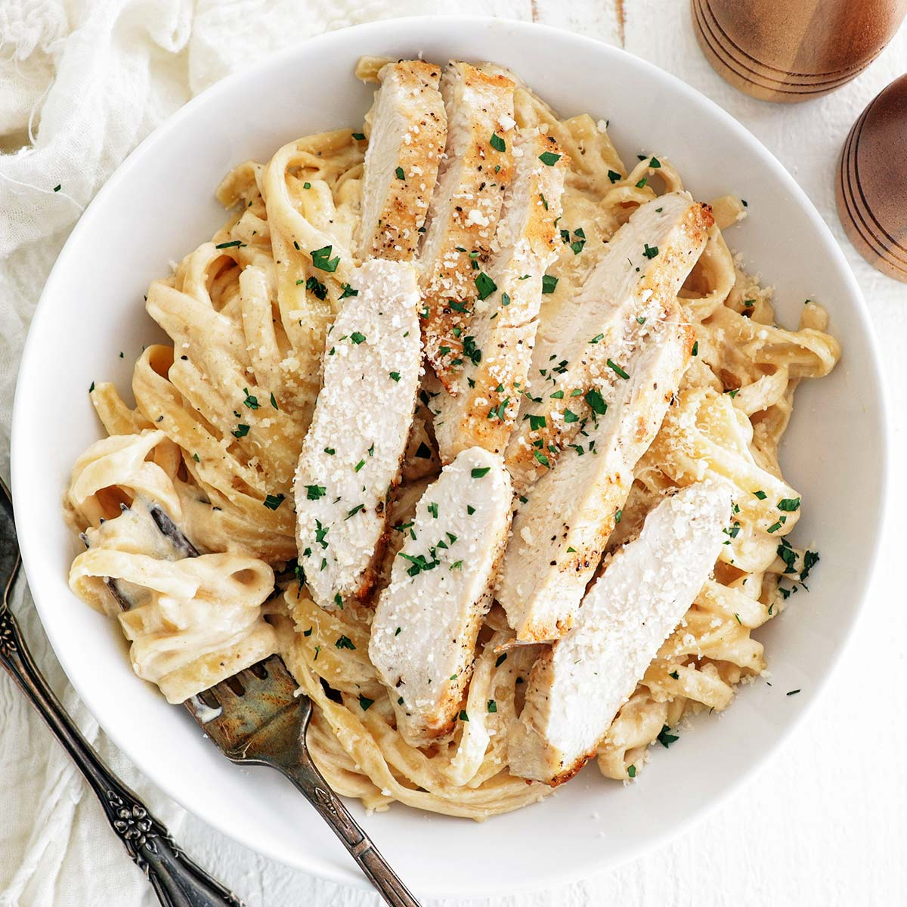

Chicken Alfredo

Description
Chicken Alfredo is a popular Italian-American dish consisting of fettuccine pasta
tossed in a creamy Alfredo sauce, with pieces of chicken added to complete the meal.
Ingredients
- uncooked fettuccine
- boneless chicken brest halves
- jar Alfreo-style pasta sauce
- frozen vegetables
- 1/3 cup milk
Steps
-
Fill a large pot with lightly salted water and bring it to a rolling boil. Cook
the fettuccine at a boil until it's tender but also firm to the bite, about 8
minutes. Drain well.
-
While the pasta is cooking, place cube cooked chicken, Alfredo sauce, frozen
vegtables, and milk in a large saucepan over medium-low heat. Cook and stir until
chicken is heated through and vegetables are tender
- Serve warm Alfredo and chicken sauce over cooked noodles.
Home